Verkefni 2 - Parametrísk hönnun og tölvustuddur skurður
Markmið
Markmiðið með þessu verkefni er að læra á tvenns konar skurði og teikningu. Í fyrri hluta verkefnisins þá átti að læra að búa til límmiða með því að skera hönnun úr vínil. Í seinni hlutanum átti svo að nota laserskera til að skera út einhverja hönnun. Sú hönnun átti að innihalda geirneglingu svo hægt sé að púsla aukahlutum saman án líms eða festinga
Vínilskurður
Verkferill
Til að byrja með þá þurfti ég að ákveða hvort ég vildi hanna sjálfur eða finna hönnun á netinu. Ég taldi að flottast væri að finna á netinu og ég ákvað að gera fjóra límmiða. Upprunalegu myndirnar mé finna hér til hliðar. Sjá má að tveir límmiðarnir eru með talsvert flóknari hönnun en það var viljandi gert til að skoða hversu nákvæmt hægt væri að skera og flysja af.
Þegar ég var búinn að velja myndir þá þurfti ég að vinna með þær. Til þess notaði ég forritið Inkscape. Til að byrja með þurfti að búa til einlita vigramynd í stað pixlamyndarinnar sem ég fann á netinu, en það er gert til að fá skarpar línur í prentuninni.Þegar það var komið þá stillti ég skurðinn fyrir 0,02 mm skurð sem byggt var á upplýsingum frá kennara. Þá var bara eftir að senda myndirnar í vínilskerann og velja lit. Hér til hliðar má svo sjá afurðir verkefnisins
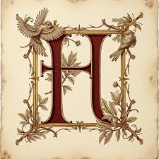
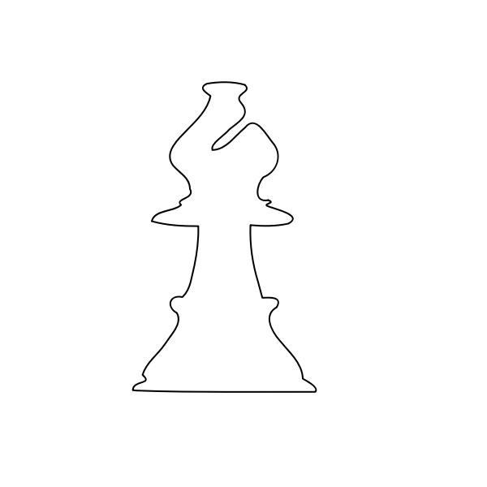
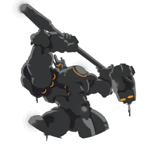
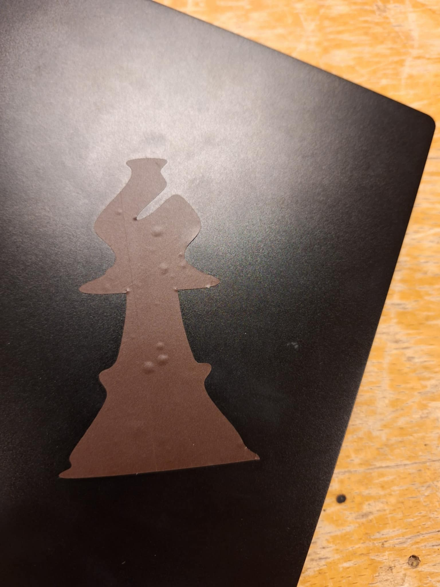
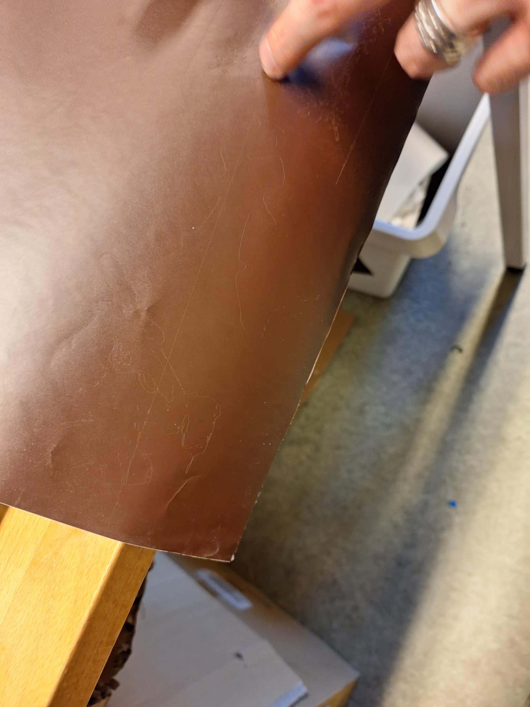
Hnökrar
Þessi hluti gekk nokkuð smurt fyrir sig. Það er alltaf smá vesen að ég er með Inkscape á íslensku en það er auðleysanlegt og einhber varður að hugsa um okkar ylhýra. Einnig gerði ég tvo límmiða með nokkuð miklum smáatriðum svo erfitt var að flysja þá af botninum
Parametrísk hönnun
Stutt lýsing
Í þessu verkefni þá var unnið með 5mm akríl sem skera átti út með laserskera. Til að finna hve þykkur laserskerinn var þá þurfti að framkvæma svokallað kerf prófun. Kerf felst í því að skera út nokkra kubba innan í ramma og reikna út hversu mikið bil myndast. Nánari tölur og myndir má finna í kerf undirkaflanum hér á efti.
Þegar hanna á eitthvað þar sem lögun eða stærð eru ekki sett í stein þá er sniðugt að hanna með parametrum. Parametrar eru verkfæri sem gera það aðvelt að breyta um ýmsar stærðir án þess að þurfa að fara inn til teikningar og breyta þeim handvirkt. Hér til hliðar má sjá suma parametra sem ég notaði. Þeir hjálpuðu sérstaklega í þessu verkefni þar sem ég var ekki búinn að mæla allar stærðir þegar ég byrjaði en ég gat búið til lögun og svo breytt þegar ég var búinn að mæla.
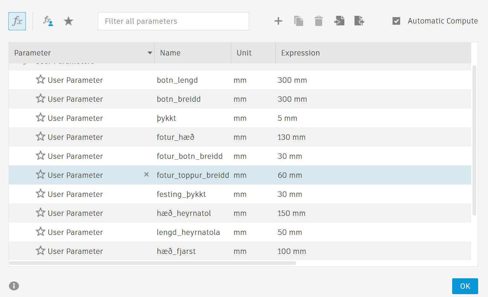
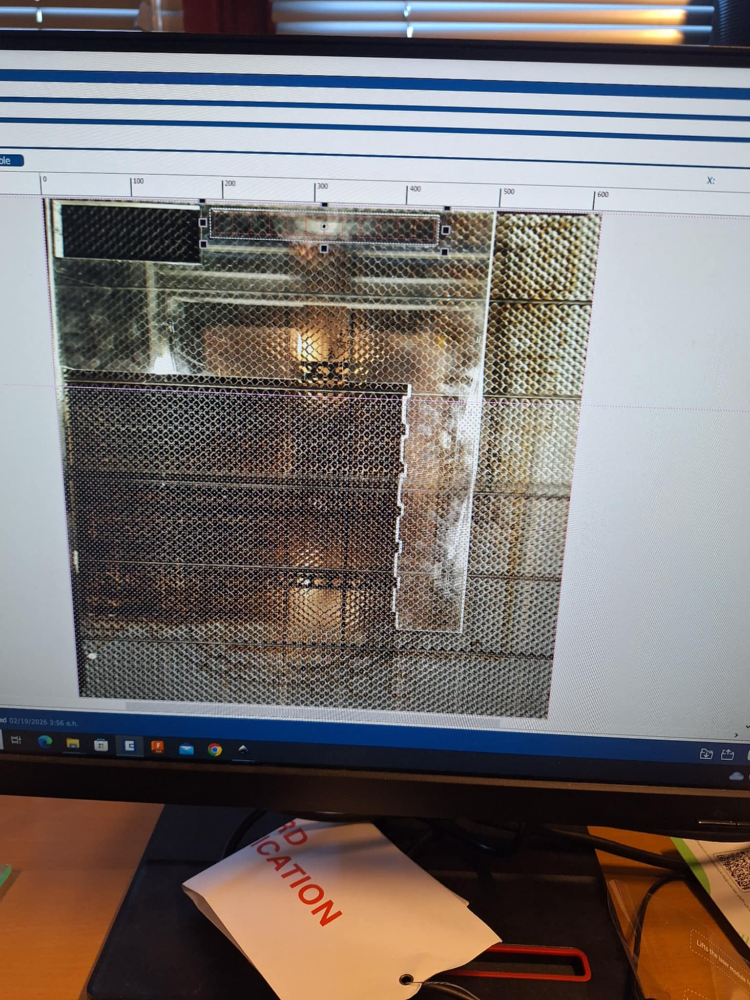
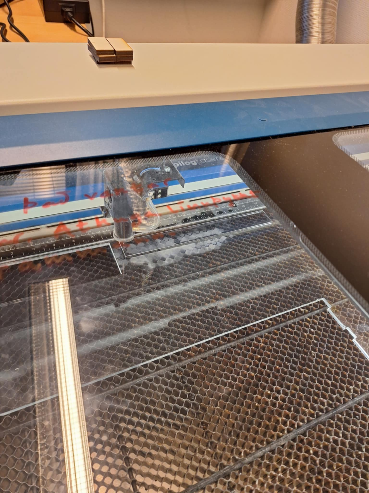
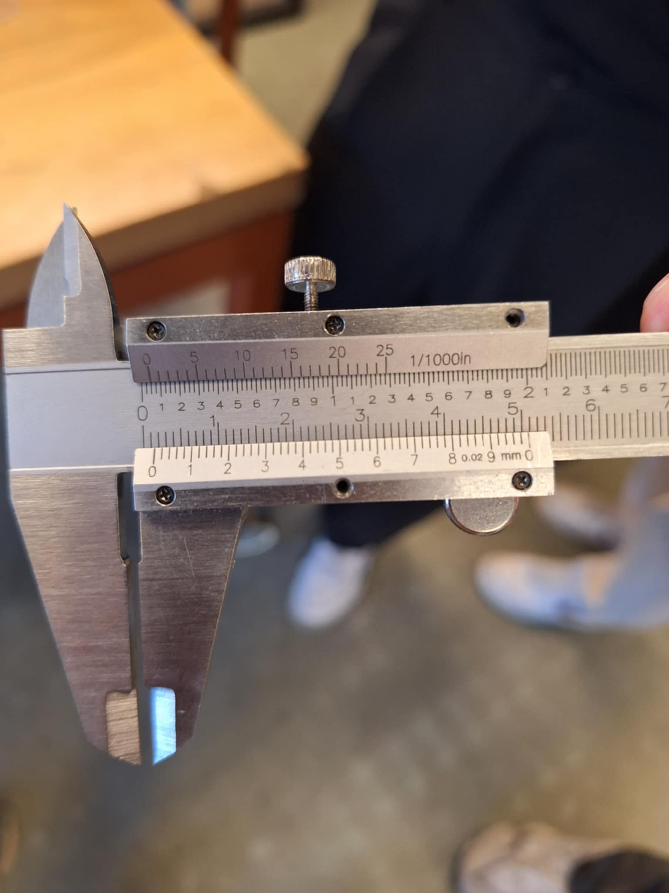
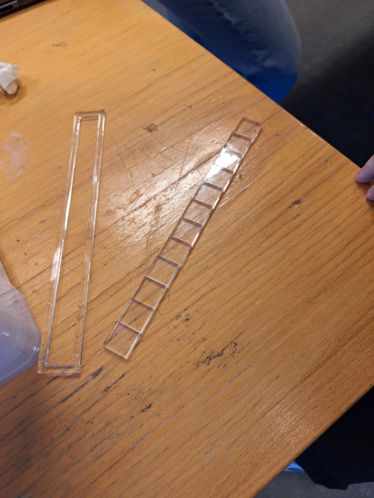
Kerf
Til að skoða hversu mikið efni laserinn tekur þá þarf að framkvæma svokallað kerf próf. Kerf prófið felst í því að skera út nokkra kassa, mæla gatið sem myndast og mæla svo lengd kassanna klessta saman. Það verður lítill munur á mælingunum sem þú þarft að deila með fjölda skurða og þá færð þú breiddina á hverjum skurði. Ég framkvæmdi kerf með Hafsteini Erni og teiknað var í tölvunni hans. Við ákváðum að teikna 12 kassa sem reyndist eiginlega of stórt þar sem lengdin fór fram yfir lengstu lengd skíðmálsins. Við framkvæmdum Kerf-ið aftur og fengum 0,18mm.
Hvað er ég að hanna
Ég hef mikinn áhuga á að spila tölvuleiki og geri það almennt á ps5 tölvunni minni. Þegar ég spila þá nota ég fjarstýtingu og heyrnatól en þegar ég er ekki að spila þá hef ég engann almennilegann geymslustað fyrir þau, sjá mynd. Ég ákvað því að hanna borð sem stendur yfir playstation tölvunni og hefur arma fyrir fjarstýringuna og heyrnatólinn. Sjá má grófa teikningu sem gefur hugmynd um hönnun og parta sem þarf.
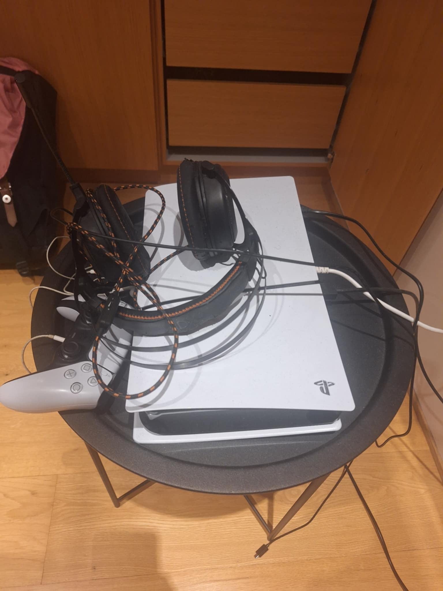
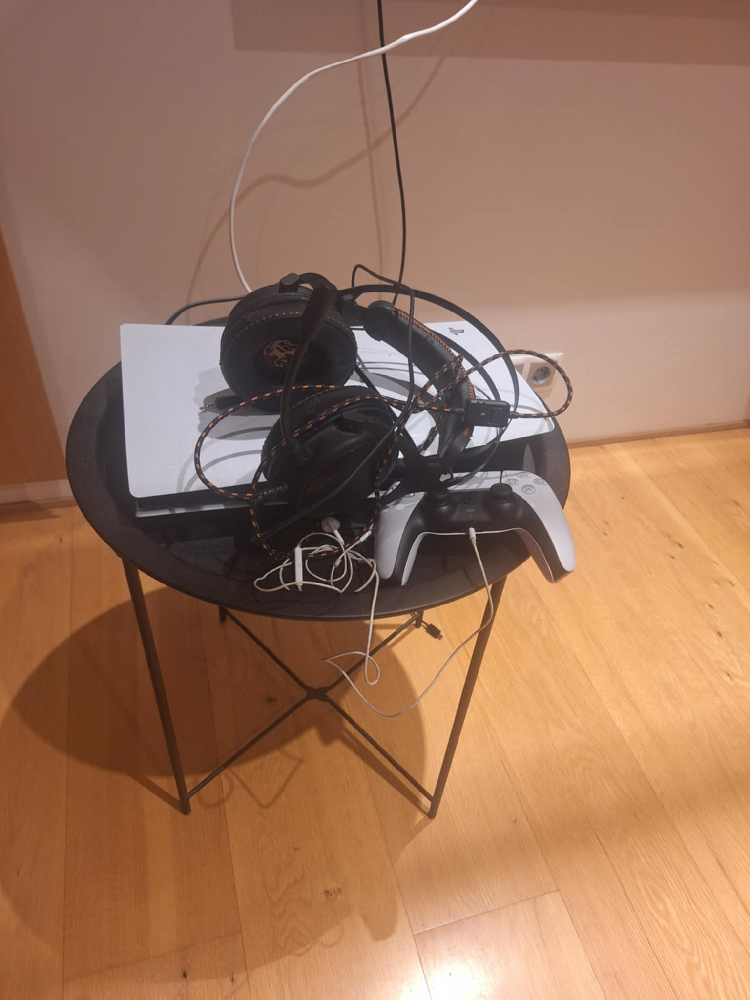
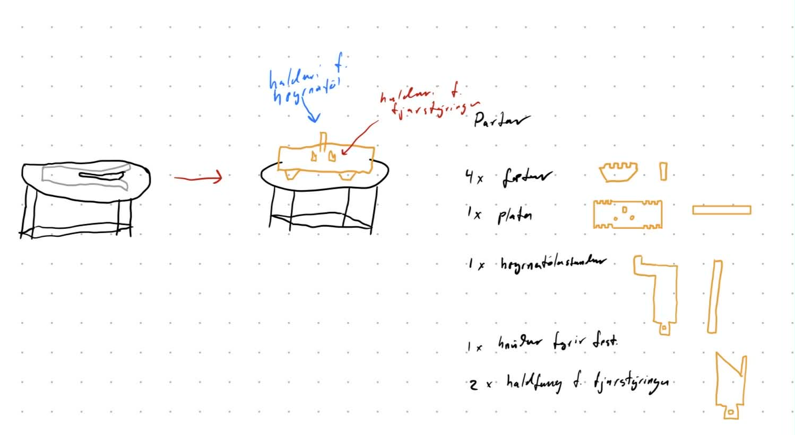
Verkferill
Þegar ég var búinn að skissa upp hugmyndina mína þá opnaði ég google og fór að leita að innblástri. Ég fann málin á ps5 tölvu og fjarstýringu og skoðaði hannanir á fjarstýringa- og heyrnatólastöndum. Þegar innblásturinn var fundinn þá gat ég opnað Autodesk Fusion og byrjað að teikna.
Fyrst byrjaði ég að teikna botnplötuna. Þar notaði ég parametrana botn_lengd og botn_breidd þar sem ég var ekki alveg búinn að ákveða hversu stóra ég vildi hafa hana. Ég byrjaði þó á 300x300 sem nær yfir alla tölvuna. Ég gerði gat fyrir heyrnatólahaldarann í miðjunni á breiddinni og 3/5 af hæðinni en það var smekksatriði, ég vildi hafa heyrnatólin bakvið fjarstýringuna og ef þay væru í miðjuni þá kæmi það nokkuð undarlega út. Svo setti ég götin fyrir fjarstýringuna 100mm fyrir neðan gatið. Fjarstýringin hefur 75mm bil á milli handfanga svo bilið á milli standa þurfti að vera einhversstaðar á því bili. Ég valdi 40mm en það breytir engu svo lengi sem fjarægðin er undir 75mm


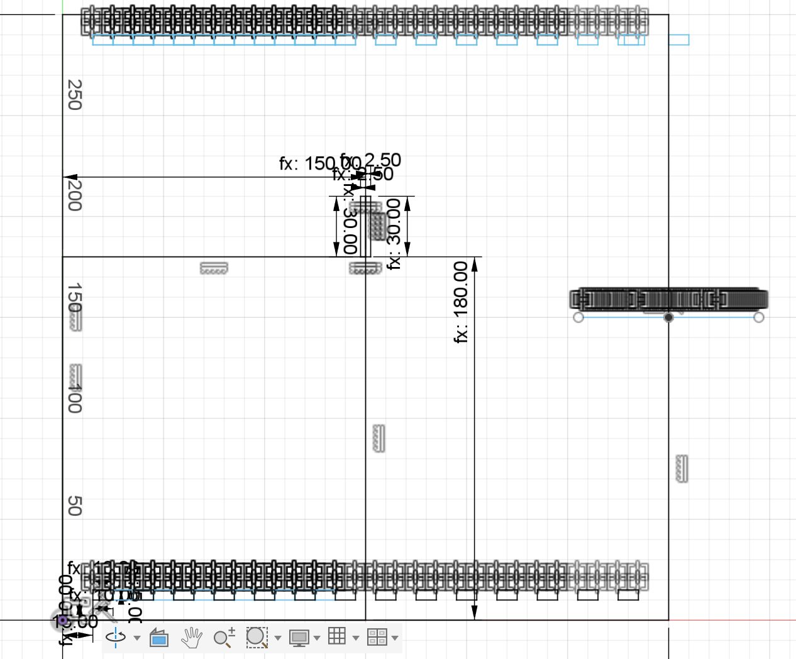
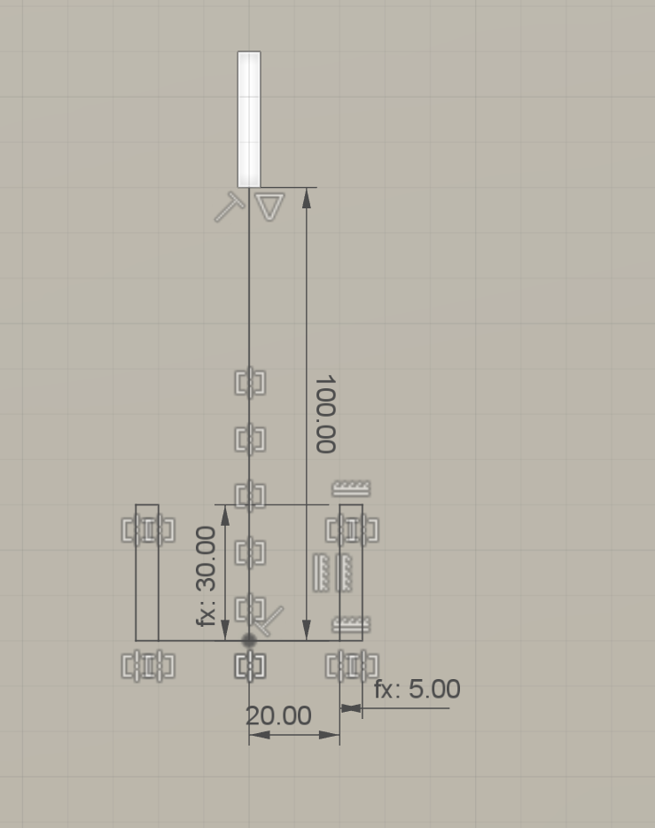
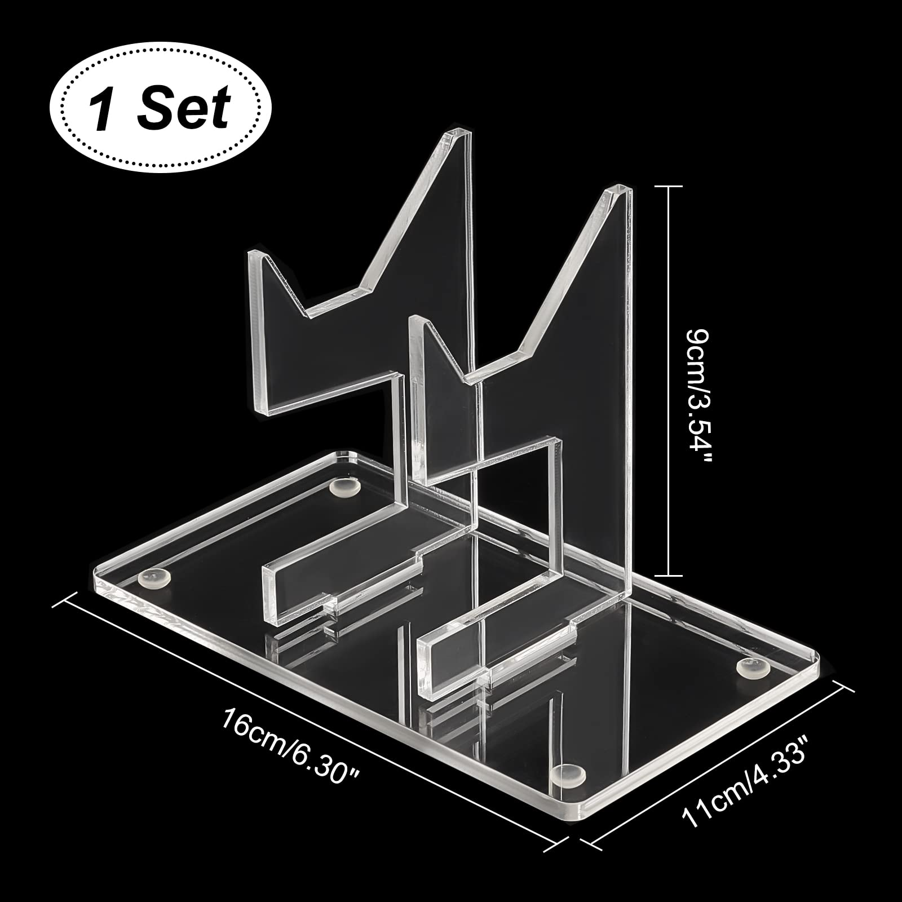
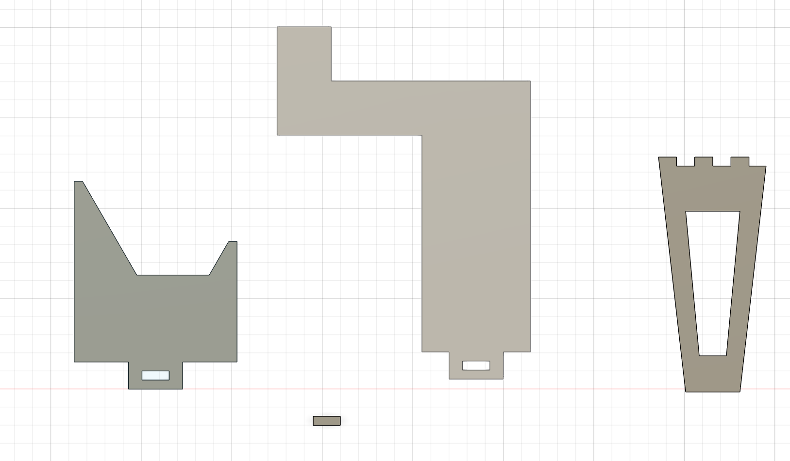
Þegar botnplatan var komin þá þurfti að hanna armana. Ég fékk innblástur fyrir fjarstýringahaldarann en heyrnatólastandurinn og fæturnir voru eftir mínu höfði. Helstu parametrarnir voru hæðirnar á þeim öllum. Fyrir fæturna og fjarstýringastandinn gat ég stuðst við upplýsingar á netinu en ég þurfti að mæla sjálfur fyrir heyrnatólastandinum.
Fæturnir eru Þurfa að ná a.m.k. 110mm hæð en til öryggis setti ég þá í 130mm. Þeir eru hannaðir með gati í miðjunni svo að snúrur geti farið í gegnum þá. Snúrurnar eru í 30-40mm hæð svo botninn tekur mark á því. Breiddin uppi og niðri er í parametrum en toppurinn er helmingi breiðari en botninn. Á topnum eru svokallaðar fingrafestingar en nánar verður fjallað um þær í festinga undirkaflanum hér að neðan
Þegar ég var búinn að hanna þá gerði ég prófun á festingunum mínum. Ég teiknaði einfalda parta með sömu stærðum og fingrafestingarnar á fótunum. Þetta var gert til að geta skoðað hvort stillingarnar séu réttar fyrir skurðinn og hvort kerf-ið sé rétt metið.
Festingin kom ekki nógu vel út þar sem að það þurfti hamar til að troða fingrunum í götin. Metið var að kerf hafi verið of stórt svo ég prófaði aftur með 0,16mm kerf. Það var aftur mjög þröngt svo ég skar út 0,14mm og 0,12mm prufur. 0,12mm prufan var best svo að ég ætlaði að reyna á hana en þá var 5mm akríllinn búinn. Heppilega var til nóg af vörtum 3mm akríl svo það eina sem þurfti að gera var að breyta þykkt parametranum úr 5mm í 3mm. Ég hefði þurft að gera kerf aftur en ég fékk að nota upplýsingar frá Benidikt Kristni Briem sem ráðlagði mér að nota 0,18mm kerf. Þegar þessar stillingar voru komnar þá raðaði ég hlutunum mínum innan í 500mm x 500mm kassa svo ég gæti skorið úr einni plötu. Næst skar ég hlutina mína út og setti þá saman. Niðurstöður má sjá hér að neðan.
Hlekkur inn á Thangs síðuna mína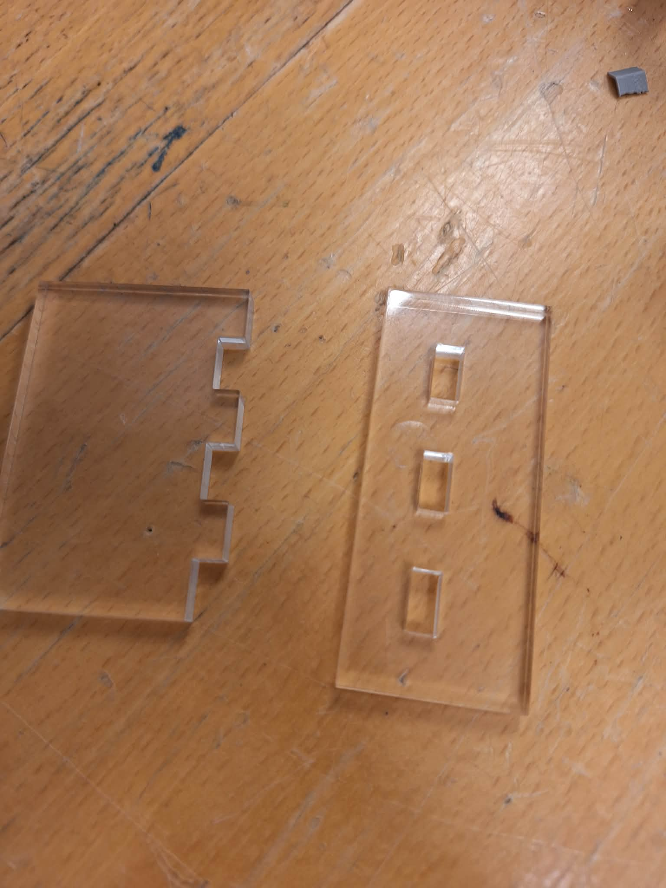
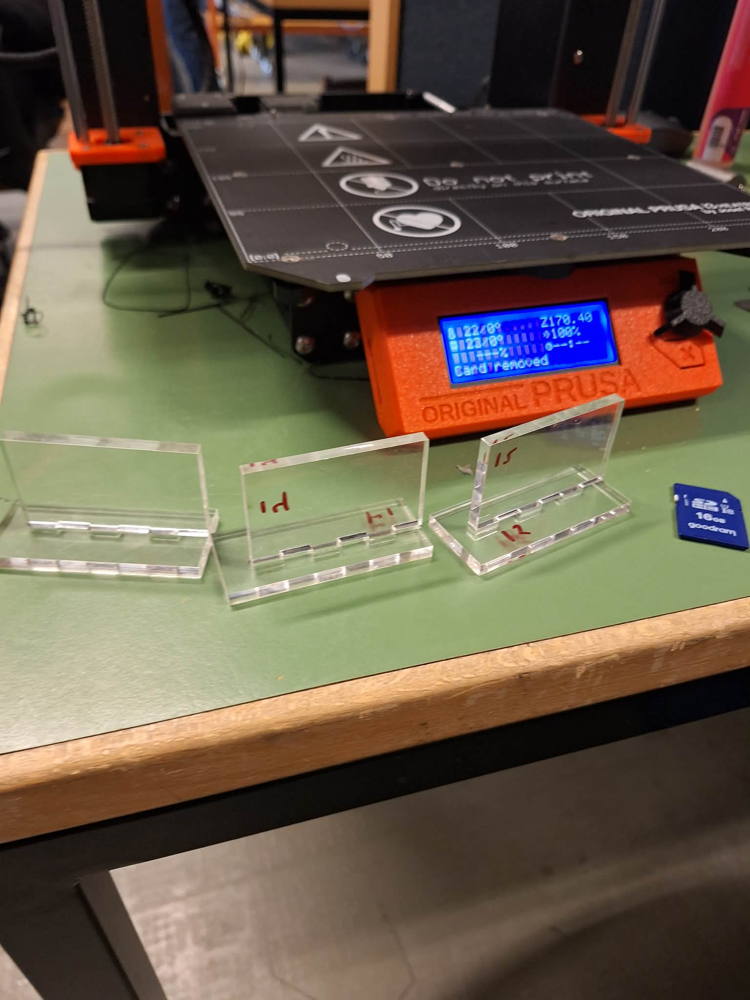
Festingar
Fingrafestingar
Það eru fingrafestingar þar sem ég festi fæturna við botnplötuna. Platan er hönnuð þannig að hægt er að færa fæturna til að snúrur séu ekki fyrir og svo að þeir passi á borðið. Fingrafestingar eru festingar þar sem svokallaðir fingur setjast í útskorin hólf
lásar
Lásarnir eru byggðir þannig að þú getur fest lausan hlut og passað að hann detti ekki út. Ég hef lása þar sem haldararnir mínir festast við botnplötuna þar sem ég vildi að þeir væru stöðugir


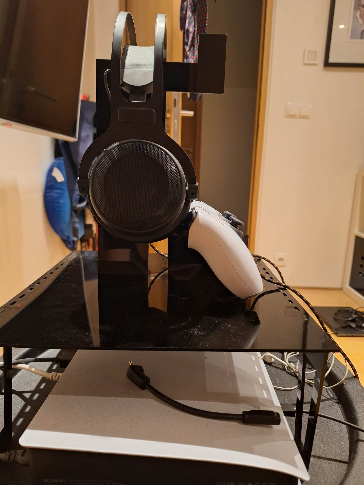
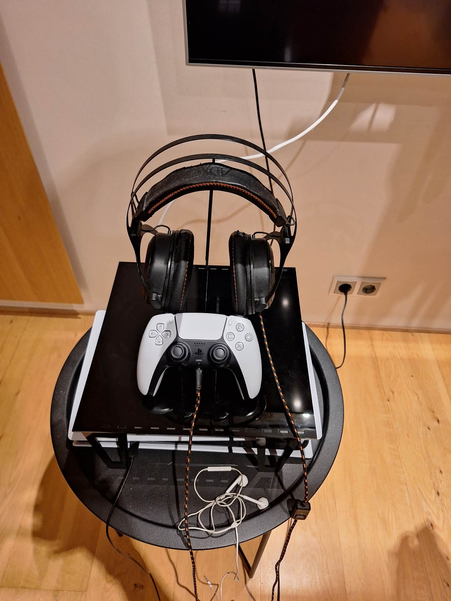
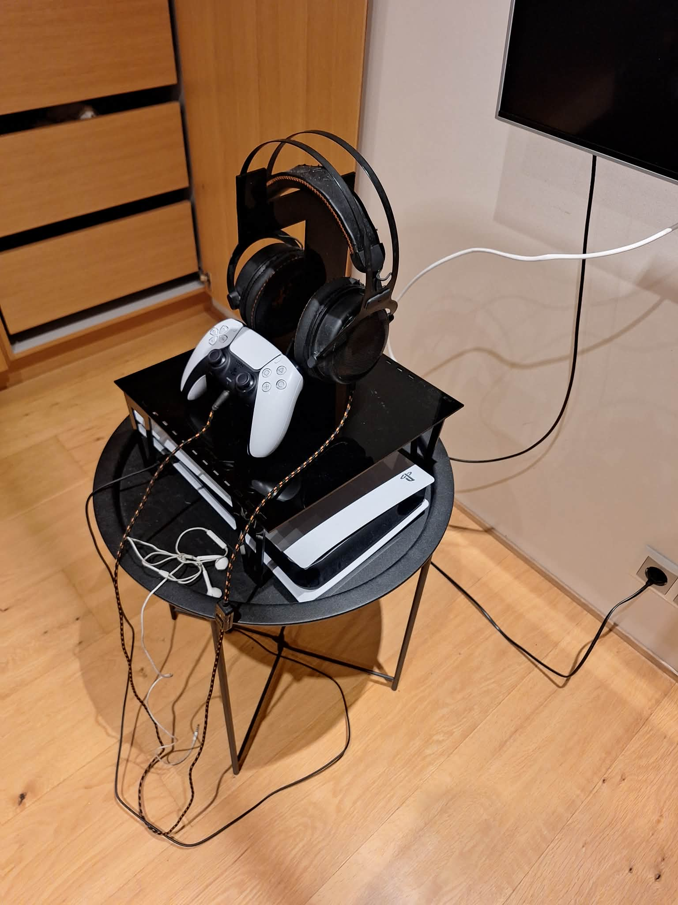
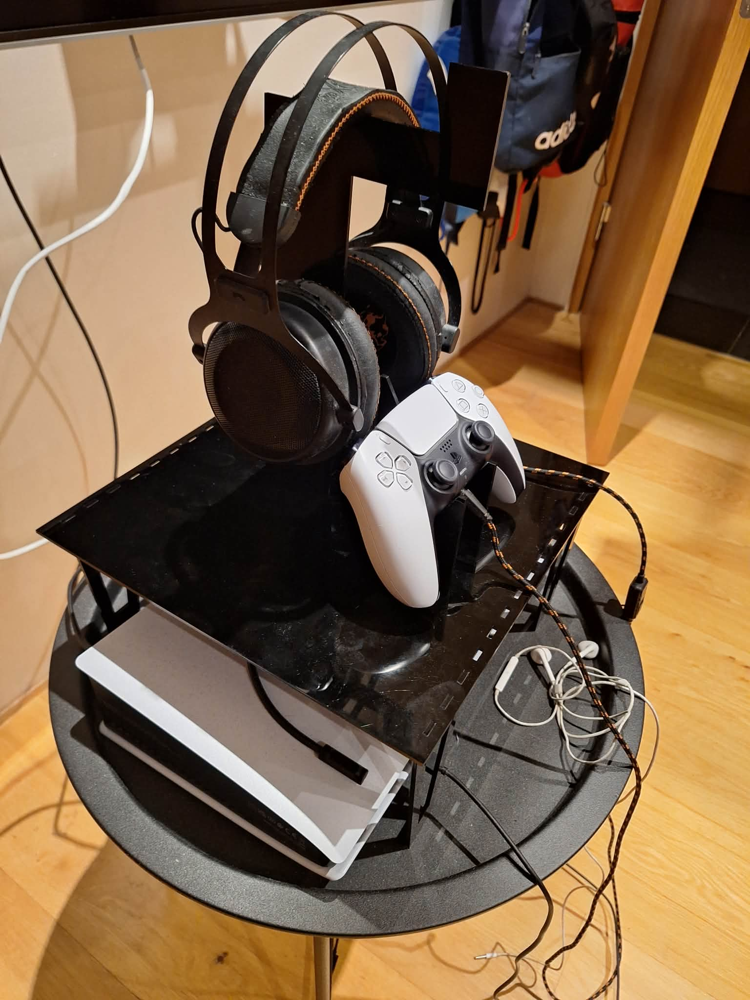
Lokaniðurstaða og hvað hefði mátt bæta
Allt í allt þá heppnaðist verkefnið vel. Ýmsilegt kom upp á og þá helst það að efnið sem ég hannaði með í huga og gerði prófanir á kláraðist. Annars þá var það helst að ég hefði átt að gera götin í festipunktunum stærri. Ég endaði á að þurfa að fara með þjöl í götin til að geta komið fingrunum inn. Einnig er heyrnatólastandurinn frekar óstöðugur. Ef endurbæta ætti lausnina þá væri hægt að hafa standinn tvöfaldann eins og fjarstýringarstandinn en eins og er þá virkar standurinn. Einnig væri hægt að gera standinn úr 5mm akríl efninu þar sem það er sterkara og bognar ekki eins.
Ef einhver kemst í laser skera og á ps5 vél þá myndi ég alveg deila þessari hönnun. Kannski mætti pæla aðeins í fagurfræðinni og gera endurbætur á heyrnatólastandinum en grunnlausnin leysir vandamálið og ég er stoltur af hönnuninni.
Heimildir og leitarorð
Helstu heimildir koma frá almennu googli. Ég þurfti að vita helstu stærðir svo að ég googlaði: Ps5 dimensions og ps5 controller dimensions. Ég leitaði í myndum og sótti myndirnar sem sjá má hér að ofan.
Einnig þurfti ég innblástur fyrir haldaranna svo að ég googlaði: ps5 controller holder og headphone stand. Fyrir fjarstýringahaldarann þá notaðist ég við myndina sem sjá má hér að ofan en fyrir heyrnatólastandinn þá fékk ég bara innblástur. Ég hefði mögulega átt að fylgja einni mynd frekar en að gera hann mikið eftir eigin hugviti en standurinn er svosem frekar einföld hönnun.